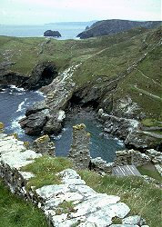

Sea Caves
|  |
| Image: View from Tintagel Castle to the next head to the north. |
{kind=link}
en: littoral cave; sea cave
de: Brandungshöhle (e); Seehöhle
es: cueva marina (f)
fr: grotte (f) littorale
hu: abráziós barlang
it: grotta (sf) costiera
pt: caverna marinha (f)
ro: peşteră (f) de abraziune
A sea cave is formed by the forces of the sea, waves seething at the rock face of a coast line, produce sometimes huge caverns, which are typically not very long. They are as long as the water reaches. The existence of this type of caves is not dependent on the kind of rock. Of course, it helps if the rock is weaker, less resistant against erosion.
Typically sea caves are formed along a weakness in the rock, like faults,
different sediments or weaker layers.
Faults in the rock sometimes produce chains of caves, everywhere the fault
reaches the sea shore.
(See  Merlins Cave)
Merlins Cave)
Already existing caves are opend by the coastal erosion and the water starts to widen the cave. Typically those caves are karst caves. Many karst areas at the coast have caves opening to the sea, where the entrance is widenend by the waves. They are often called sea caves, which is only partly true.
Sometimes faults, existing caves or weaknesses in the rock produce a small hole to the surface. The water swashing into the sea cave builts up a high pressure inside the cave, which emerges in form of water and air out of the small hole. This is called a blow hole. They are found all over the world along the coasts.
The biggest sea cave of the world is